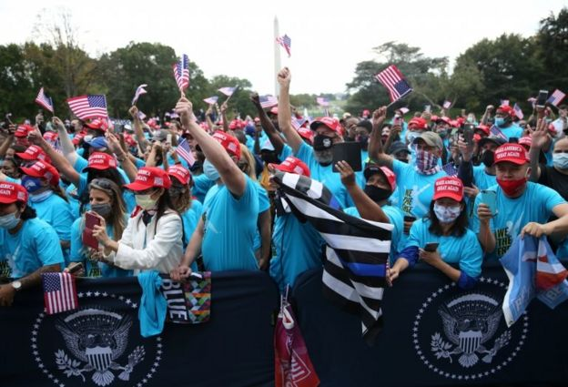

Covid: Trump 'no longer a transmission risk to others'
11 October 2020US election 2020
US President Donald Trump is no longer a Covid transmission risk to others, the White House physician has said.
Sean Conley's memo is the first update on Mr Trump's health since Thursday.
There had been concerns that he might still be contagious following his three-day hospital stay. However, the statement did not say whether Mr Trump had tested negative for Covid-19.
He is due to face Democratic challenger Joe Biden in the presidential election in less than a month, on 3 November.
Polling suggests Mr Biden has a 10-point lead over Mr Trump nationally. However his lead in some key swing states is narrower - he is 7 points ahead in Pennsylvania, 3.7 points ahead in Florida and less than a point ahead in Ohio, according to an average of polls collated by Real Clear Politics.
There is also unprecedented uncertainty over mailed ballots. Some states want to expand postal voting as a public health measure against the virus but Mr Trump has claimed without evidence that postal voting is vulnerable to fraud.
Meanwhile an ABC News/Ipsos poll found that just 35% of Americans approved of how the president has handled the coronavirus crisis.
More than 214,000 Americans are known to have died with Covid-19.
What is Trump's condition?
The doctor's memo said the latest tests on the president revealed there was "no longer evidence of actively replicating virus", and that his viral load was "decreasing".
Trump no longer needs to isolate, his doctor says pic.twitter.com/lQQ6KRANle
— David S. Joachim (@davidjoachim) October 11, 2020
In the memo, Dr Conley said President Trump had been given sensitive lab tests that detect how much of the virus is still in his system and that by currently recognised standards, he is no longer considered a transmission risk to others
.
Mr Trump first started showing symptoms of coronavirus 10 days ago, and was admitted to Walter Reed Medical Center a day later.
While there, he was treated with - among other medication - dexamethasone, a steroid medication usually only used on people who are seriously or critically ill with the virus.
Dr Conley's latest update comes after President Trump told a crowd at a White House event that he was feeling great
. He also said that he was no longer taking any medication against Covid-19.
The event on Saturday was officially a "peaceful protest", but looked, critics said, much like a Trump campaign rally.
Why were there concerns over Trump's latest event?
The rally brought together several hundred people. Images from the event showed many of them packed closely together.
The White House said those attending were required to undergo temperature checks and fill out questionnaires. Face masks were advised, although not everybody complied.
Senior Democratic Congressman Adam Schiff said it was
morally bankrupt
for the president to hold another super-spreader rally
at the White House.
After a previous event in the White House Rose Garden on 26 September, at least 11 people who attended subsequently tested positive for coronavirus, including Mr Trump. The top US infectious disease expert Dr Anthony Fauci described it as a "super-spreader event".
The president's campaign team has also said he is planning to attend a "big rally" in Florida - a battleground state in the presidential election - on Monday, followed by trips to Pennsylvania and Iowa.
What is Biden doing this weekend?
Mr Trump's rival in next month's election, Joe Biden, has been campaigning in Pennsylvania, another key swing state, as well as Delaware. He said his heart goes out
to all those families who had lost someone they loved to coronavirus
Mr Biden has also expressed disbelief at the president's plans to hold rallies and criticised the Trump administration's lax stance on mask use as reckless.
They should be socially distant and wearing masks,
he said. It's the only responsible thing to do.
At a campaign event with unions in Pennsylvania, Mr Biden vowed to create millions of well-paid jobs, and to fund the pandemic recovery by making billionaires and corporations pay more tax.
- Why we might not get a result on election night
- Where does Donald Trump stand on key issues?
- What Joe Biden wants to do
- Full coverage of the US election